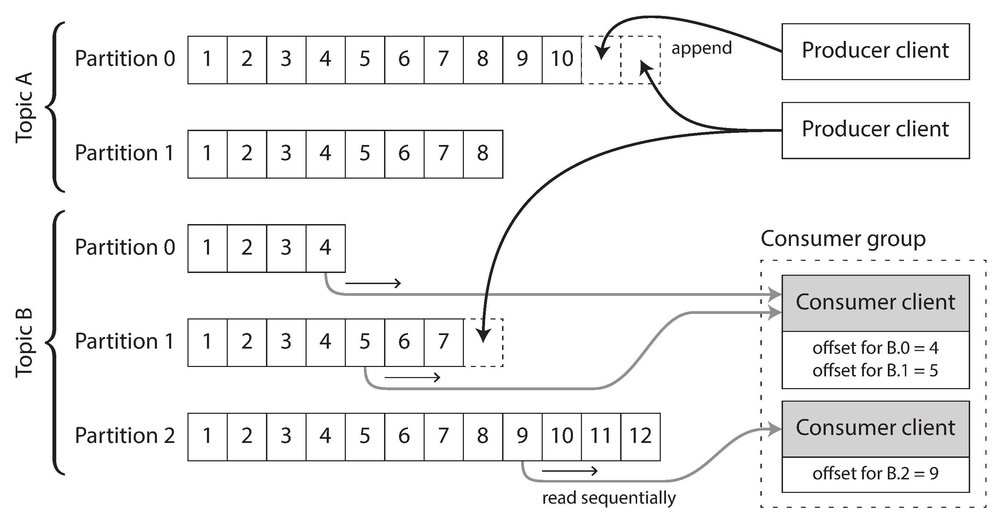
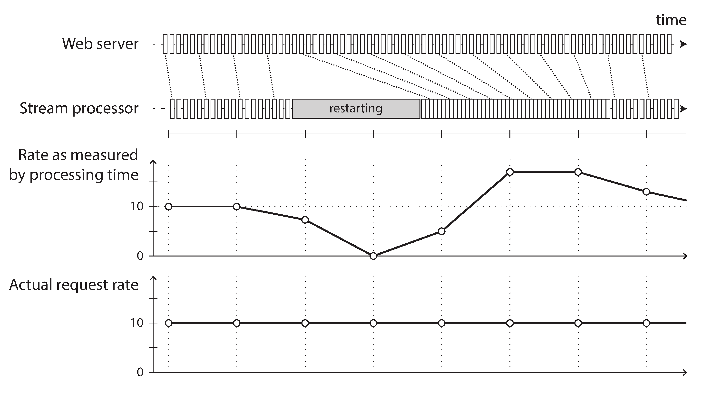

术语表 · 第 12 章 · 课程 12 / 14
流处理
批处理处理「已经落盘的一堆文件」，流处理处理「永远写不完的一堆事件」。这个差别听上去只是输入边界不同，实际它推翻了批处理赖以成立的三个前提：能排序、能重跑、能等全部到齐。这一章真正要拿到手的，是当有人问你「exactly-once 保证什么」时，你能说清它的边界。
12.1事件流不是「实时版文件」
先把词统一。事件（event）是一个小巧、自包含、不可变的对象，记录某个时刻发生的某件事，通常带时间戳。它可能来自用户点击，也可能来自传感器的一次读数、CPU 利用率的一次采样。编码之后它可以写进文件、插进关系表、塞进文档库，或者经网络发到另一个节点。
批处理里，文件写一次、多个作业读多次。流处理里对应的是：事件由生产者（producer）生成一次，由多个消费者（consumer）处理；相关事件归入同一个主题（topic）或流（stream）。
原则上文件或数据库足以连接生产者和消费者：生产者写库，消费者定期轮询。这就是「每天夜里跑一次批处理」在做的事。转向低延迟持续处理时它才崩：轮询越频繁，返回新事件的请求比例越低，固定开销占比越高。所以需要「有新事件时通知消费者」的机制，而传统关系数据库对这件事支持很差：触发器能做的事很有限，在数据库设计里属于事后补丁。
于是有了消息传递系统。区分它们只需要问两个问题，这两个问题也是评审时最该问的：
- 生产者比消费者快时会怎样？丢弃、排队、还是背压（backpressure，阻塞生产者）。Unix 管道和 TCP 选背压：固定大小的小缓冲区，满了就阻塞写端。消息代理通常选无限排队，于是要追问下一层：队列涨到内存放不下会怎样？溢写磁盘之后磁盘访问怎么影响吞吐？磁盘写满呢？
- 消费者崩溃时消息会怎样？这就需要确认应答（acknowledgment）：处理完必须明确告知代理，代理才把消息从队列移除。连接关闭或超时未收到应答，代理就假定没处理，重新投递给另一个消费者。
第二条会带来一个被严重低估的后果：重新投递加上负载均衡，必然打乱消息顺序。消费者 2 在处理 m3 时崩溃，与此同时消费者 1 在处理 m4；m3 未确认，被重新投给消费者 1，于是消费者 1 按 m4、m3、m5 的顺序处理。m3 和 m4 的传递顺序与生产者发送顺序不同了。即使代理声称保持顺序（JMS 和 AMQP 标准都这么要求），负载均衡与重新投递的组合仍会重排。想彻底避免，只能每个消费者一条独立队列，也就是放弃负载均衡。
这里藏着一条面试常被追问的因果链：顺序保证和并行消费是互斥的，除非你把并行的单位从「消息」提到「键」。Kafka 的分区就是这么做的：分区内有序，分区之间无序。你在评审里写「用 Kafka 保证顺序」时，实际承诺的是「同一个 key 落在同一个分区内有序」，而不是「全局有序」。这两个承诺的代价差一个数量级。
12.2基于日志的消息代理：顺序是免费拿到的
传统消息代理（RabbitMQ、ActiveMQ、SQS 这一类）把消息当成待办事项：投递成功就删。这类系统适合做异步 RPC 和任务队列，前提是「消息之间彼此独立、处理完不需要回看旧消息」。
基于日志的代理（Kafka、Pulsar 的持久层）换了个模型：主题是一个只追加的分片日志，生产者往末尾追加，消费者用偏移量（offset）标记自己读到哪儿。这带来几个性质，每一条都是取舍：
| 性质 | 你得到了什么 | 你付出了什么 |
|---|---|---|
| 分片内严格有序 | 消费者可以按写入顺序重建状态 | 并行度上限 = 分片数；热点 key 会压死单个分片 |
| 消息保留在磁盘 | 可以回退偏移量重放历史，可以从头重建新视图 | 磁盘容量与保留策略成为运维指标 |
| 消费者自己管偏移量 | 不同消费者组互不影响，天然扇出 | 偏移量提交时机变成正确性问题（见 12.4） |
| 不删除已消费消息 | 同一条流可以喂给任意多个衍生系统 | 「消费完就释放」的直觉失效，需要显式 compaction 或 TTL |
最后一行是「把 Kafka 当数据库」这个说法的全部依据。前面几章反复出现的模式在这里闭环了：数据库的复制日志、LSM 树的预写日志、基于日志的消息代理，三者是同一个结构的三个用途。第 6 章用它同步副本，第 4 章用它保证崩溃恢复，第 12 章用它连接异构系统。你在评审里说「用 CDC 把变更同步到搜索索引」，本质上是把数据库的复制日志开放成了一个公共 API。

磁盘空间怎么算？如果每个消费者都落后，日志必须保留它还没读的部分。所以保留策略通常是「按时间」或「按大小」而不是「按消费进度」。消费者跟不上生产者时，监控应该盯的是消费延迟（lag）而不是队列长度。lag 是「当前写入偏移量减去已提交偏移量」，单位是消息条数或时间，后者更贴近业务含义。
12.3数据库与流：CDC、日志压实、事件溯源
把数据库的变化看成流，是这一章最有实用价值的一节。原因是所有真实系统都要面对同一个问题：同一份数据要在多个存储里各有一份表示，而多份表示之间必须保持一致。
近年来，变更数据捕获（change data capture，CDC）越来越受关注。它是这样一个过程：观察写入数据库的所有数据变化，将其提取成可以复制到其他系统的形式。如果变化一经写入就立即以流的形式提供出来，CDC 尤其有用。
例如，你可以捕获数据库中的变化，并持续把相同变化应用到搜索索引。只要按同一顺序应用变更日志，搜索索引中的数据就有望与数据库保持一致。搜索索引以及其他衍生数据系统，都只是变更流的消费者。
「只要按同一顺序」这五个字是全部要害。如果应用既写数据库又写搜索索引（双写），两个客户端并发提交相互冲突的写入，两个存储系统可能以不同顺序处理它们，从此永久不一致：数据库里 X 最后是 B，搜索索引里最后是 A，而且没有任何机制会自己纠正回来。CDC 把「决定顺序」这件事收敛到一处：数据库先决定顺序，写进复制日志，其余系统照抄。
CDC 的两条工程细节常被忽略：
- 初始快照。日志通常会被截断，所以当你新建一个全文索引时，只应用最近的变更不够：那些很久没更新过的记录根本不会出现在日志里。必须从一个与日志某个已知偏移量对应的一致快照开始，再从这个偏移量往后追。快照与偏移量的对齐做错，会得到「中间某段时间的写入丢失」这种最难查的 bug。
- 日志压实（log compaction）。只保留每个键的最新值，旧版本被回收。墓碑（tombstone，特殊空值）表示删除。压实之后磁盘占用只取决于数据库当前内容，与历史写入次数无关。于是新消费者可以从偏移量 0 开始扫一遍，就拿到数据库的完整副本，不需要再对源库做快照。
压实这件事的代价要写清楚：压实后的日志不能再回答「历史是什么」。这直接和后面的「连接的时间依赖性」冲突。如果你需要按销售发生时的税率算发票，税率表被压实成只有最新版本，历史就没了。所以 CDC 主题的保留策略不是运维参数，是语义参数。
事件溯源（event sourcing）把这件事推到极端：不只记录状态变化，而是把「用户意图」本身作为不可变事件追加，状态完全由事件折叠出来。它的价值在可重放与可审计，代价在事件模式的演化：事件一旦写下就不能改，字段语义变更只能靠版本号和新事件类型，这和第 5 章的编码演化是同一道题，只是更难，因为事件是永久保留的。
12.4时间推理：窗口为什么会算错
「过去五分钟的平均值」听起来清楚，实现起来是整个流处理里最容易出错的地方。原因是这里有两个时间：
批处理必须用事件时间，因为作业运行时间与事件发生时间毫无关系：一个作业可能几分钟读完一整年的历史。而且用事件时间让处理确定：同样输入重跑，结果相同。
很多流框架默认用处理时间划窗口，因为简单。只要「事件产生到事件处理」的延迟可以忽略，这没问题。但延迟一旦显著，它就会造出假数据：流处理器重新部署停机一分钟，恢复后处理积压事件，按处理时间算的 QPS 曲线会出现一个根本不存在的尖峰，而真实请求速率一直平稳。

按事件时间定义窗口时，有一个棘手的问题：你永远无法确定某个窗口的所有事件是否已经到齐，还是仍有一些事件尚未到达。
如果一段时间内没有再看到属于某个窗口的新事件，可以让它超时并宣布窗口就绪。然而，某些事件可能仍缓存在另一台机器上，因网络中断而延迟。你必须能够处理这些在窗口宣布完成后才到达的滞留事件（straggler event）。
大体上有两种选择：要么忽略滞留事件，把丢弃的事件数量作为指标跟踪，丢弃量大了就报警；要么发布更正，为窗口发布一个包含滞留事件的更新值，必要时撤回先前的输出。
这段是本章最该背下来的一段，因为它说明了一件反直觉的事：事件时间窗口的正确性是有代价的，而且这个代价只能由你选择怎么付。选「忽略」意味着窗口是近似值，你必须能回答「误差上界是多少」；选「更正」意味着下游必须能处理同一窗口的多次输出，甚至撤回——也就是下游要能接受 upsert 或 retraction 语义。评审文档里写「实时统计每分钟订单量」而不写这两者之一，等于把问题留给了半夜被叫起来的人。
常见的补充手段是水位线（watermark）：一条特殊消息声明「从此不会再有时间戳早于 t 的消息」。但多生产者时，每个生产者有各自的最小阈值，消费者必须分别跟踪；增删生产者会让这件事变得很棘手。水位线不是免费的正确答案，它只是把「什么时候算齐」变成了一个可配置的假设。
窗口类型本身是次要的，但要知道它们的实现代价：滚动窗口（tumbling，不重叠）、跳跃窗口（hopping，可重叠）、滑动窗口（sliding，按事件间距）、会话窗口（session，无固定长度，按活动间隙切分）。计数类聚合的状态是常数大小；滑动窗口和流连接必须缓冲事件直到窗口结束，窗口越大、吞吐越高，临时状态越大。这类状态放内存还是放磁盘，直接决定了故障恢复时间和机器规格。
12.5三类流连接
批处理的连接是「两个已完成的集合做笛卡尔积再过滤」。流里没有「已完成」，所以连接必须重新定义。三类连接的区别只在于「哪一侧有历史、哪一侧只有当下」：
- 流—流连接（窗口连接）：两侧都是活动事件。典型是搜索事件与点击事件按会话 ID 关联，算点击率。点击可能几秒后到，也可能几周后到，甚至可能先于搜索事件到达（网络乱序）。所以要选一个窗口，例如「只连接相隔不超过一小时的事件」。而且必须为「搜索了但没点击」发出事件，否则点击率的分母永远缺一块。
- 流—表连接（流扩充，stream enrichment）：一侧是活动事件，另一侧是数据库的变更日志。用 CDC 让本地副本保持最新，避免每个事件都发一次远程查询。这本质上就是散列连接（hash join）从「一次性」变成「持续」。它的窗口在概念上是无限回溯的——表的新版本覆盖旧版本。
- 表—表连接（维护物化视图）：两侧都是变更日志。社交网络时间线就是 posts 与 follows 两张表连接的物化视图，每次帖子或关注关系变化都要更新它。有个漂亮的结论：把流看作表的导数，物化连接的变更流满足乘积法则 (u·v)′ = u′v + uv′。
三类连接的共同点是：连接算子必须在一侧维护状态，并在另一侧消息到达时查询这个状态。所以顺序在这里变成了正确性问题，而不只是性能问题。先关注再取消关注，和反过来，结果不同。Kafka 只保证同分区内有序，不同流之间没有顺序保证。
这就引出「连接的时间依赖性」：如果状态随时间变化，你要和哪个时间点的状态连接？最典型的例子是税率：发票应该用销售发生时的税率，而不是当前税率。数据仓库里这叫缓慢变化维度（slowly changing dimension，SCD），解决办法是给每条记录的每个版本一个唯一标识符，发票保存销售时用的那个标识符。代价是表不能再做日志压实，所有版本都得留着；另一种办法是反规范化，把税率直接冗余进每个销售事件。
这个模式在你自己的系统里天天出现：任何「引用一张会变的表」的设计，都在隐式选择一个时间点。订单引用商品价格、报表引用组织架构、审计日志引用权限表——问一句「重跑三个月前的报表，用的是哪个版本的价格」，就能立刻分辨出这个设计是想了还是没想。
12.6容错：exactly-once 到底保证了什么
这一节是整章的高潮，也是面试里最常被问倒的地方。
具体来说，批处理的容错方式可以确保：即使某些任务实际上失败过，批处理作业的输出也与没有发生过任何问题时相同。看起来每条输入记录都只处理了恰好一次——没有记录被跳过，也没有记录被处理两遍。重新启动任务意味着记录实际上可能处理了多次，但输出中可见的效果却像只处理了一次。这个原则称为恰好一次语义（exactly-once semantics），不过等效一次（effectively-once）或许是更贴切的叫法。
请把这段话读三遍，因为它推翻的正是大多数人的理解。exactly-once 不是「消息只被传递一次」，也不是「处理函数只被调用一次」。失败重试意味着它很可能被执行了多次。它保证的是：对外可见的效果与只执行一次相同。
这个「对外可见」是关键词，它划出了保证的边界。批处理能做到，是因为输入文件不可变、每个任务输出写独立文件、只有任务成功完成后输出才可见，所以失败任务的输出可以直接丢掉。流处理没有这个条件：流永不结束，输出持续产生，你没法「等作业结束再让输出可见」。
流处理常用的三种机制，各自的保证范围不一样：
| 机制 | 做法 | 保证到哪一层为止 |
|---|---|---|
| 微批处理（microbatching） | 把流切成约一秒的小批，每批当微型批作业跑 | 框架内部状态；批次边界按处理时间切 |
| 检查点（checkpoint） | 定期把算子状态快照写持久存储，崩溃后从最近检查点重启并丢弃之后的输出 | 框架内部状态；由流中的屏障（barrier）触发 |
| 原子提交 / 幂等写入 | 让输出与偏移量提交在同一事务里；或让写入操作本身幂等 | 可以跨到外部系统，但需要外部系统配合 |
在流处理框架内部，微批处理与检查点都能提供与批处理相同的恰好一次语义。然而，一旦输出离开流处理器——例如写入数据库、向外部消息代理发送消息或发送电子邮件——框架便无法丢弃失败微批次的输出。这时，重启失败任务会使外部副作用发生两次，仅靠微批处理或检查点不足以避免这个问题。
这就是「exactly-once 到底保证了什么」的标准答案骨架：保证在框架管理状态的那一段边界之内成立，跨出边界就退化。写 Kafka 主题可以做到端到端，因为 Kafka 的事务把「写输出」和「提交偏移量」绑在一起；写一个不支持事务的外部数据库，就得靠幂等：把消息偏移量随值一起写进去，用「这条更新是不是已经应用过」来判断。
幂等这条路有三个必须写进文档的假设，少一个就不成立：
- 重启时必须以相同顺序重播相同消息（基于日志的代理可以做到，随机分配的队列不行）。
- 处理过程必须确定：不能在里面调当前时间、随机数、外部服务。
- 不能有其他节点并发更新同一个值。故障切换时还需要栅栏（fencing）机制，防止一个被判定死亡但其实还活着的节点继续写。
第三条是分布式系统里最阴的那类 bug：你以为旧节点死了，它只是被 GC 暂停了 12 秒或者网卡在丢包，醒来之后照样往共享存储写。如果没有单调递增的栅栏令牌让存储端拒绝旧持有者，你所谓的「主节点唯一」只是概率性的。
12.7反例：CDC 顺序错乱导致副本状态漂移
反例
订单服务的写入路径是：INSERT/UPDATE orders 到 MySQL，然后「发一条消息到 Kafka 让搜索索引更新」，两个动作在应用代码里先后执行，不在同一个事务里。Kafka 主题开了 6 个分区，生产者用默认的分区器（按 key 哈希），搜索索引消费者按消息到达顺序 upsert 文档。
为了「提高吞吐」，消费者开了 6 个线程，每个线程从不同分区拉取，然后并发写 Elasticsearch。
① 双写没有顺序权威。同一个订单先被改成 status=PAID 再被改成 status=REFUNDED，两次写入分别由两个应用实例发出，到达 Kafka 的顺序可能反过来。搜索索引最终显示 PAID，而数据库里是 REFUNDED，并且此后没有任何东西会纠正它，因为没人再写这个订单了。
② 分区不解决跨 key 的顺序。就算按 order_id 分区保证了单订单内有序，关联的 order_items 是另一张表、另一个主题，两个主题之间的相对顺序没有保证，物化出来的订单详情可能引用了还不存在的明细。
③ 并发消费把顺序还回去了。即使分区内有序，6 个线程并发 upsert 到 ES，同一文档的两次更新仍然可能乱序落地。ES 的版本号能挡住旧版本覆盖新版本，但前提是你把数据库的版本号带过去了。默认的 _version 是 ES 自己分配的，它只反映 ES 收到的顺序。
④ 没有对账。漂移是静默的，只能靠用户投诉「我的订单明明退款了还显示已支付」才发现。
改法：把「决定顺序」收敛到一处——应用只写数据库，CDC（Debezium 之类）从 binlog 抽取变更，按主键分区进入 Kafka。这样顺序由数据库的提交顺序唯一决定，搜索索引只是消费者。消费者按 key 分区串行处理，或者把数据库的 updated_at／单调版本号带进文档，让 ES 用外部版本号做条件更新。再补一条：给关键主题加端到端对账任务，每天比一次「源库行数/校验和 vs 衍生库」，漂移超阈值告警。反例里所有问题里，只有这一条能在你没想到的地方救你。
这个反例有个更一般的名字：任何「两个存储都要写」的设计，都在赌两个存储对顺序的判断一致。赌赢的概率不低，所以它能上线；赌输的代价是永久不一致，所以它必须在评审里被指出来。
12.8面试里怎么答
「你们怎么保证 exactly-once？」
「先把问题拆开：exactly-once 保证的是对外可见的效果与只执行一次相同，不是消息只投递一次。失败重试时处理函数其实会跑多次。
在 Kafka Streams 或 Flink 这种框架里，它靠检查点或事务把算子状态、输出消息、偏移量提交绑成一个原子单元，范围到框架边界为止。一旦输出写到一个不支持事务的外部系统，比如一个普通的 MySQL 表，这个保证就断了，重启会让副作用发生两次。
所以跨出去的那一段我们自己补：写入时把消息偏移量或请求 ID 一起写进去，靠唯一索引做幂等；同时要求重播顺序一致、处理逻辑确定、并且用栅栏令牌防止故障切换时的双写。这三个前提缺一个，幂等就不成立。
如果连幂等也做不到，比如要发邮件、要调第三方支付，那就退到至少一次加去重表，并且明确接受『去重表会一直增长，需要按时间分区清理』这个运维代价。」
练习场景判断
一个实时风控系统用 Flink 按事件时间开 5 分钟窗口统计「同一张卡 5 分钟内交易笔数」。上线后发现凌晨对账时，风控判定的笔数总是比数据库实际笔数少 1%–3%，白天则基本吻合。
「夜间偏少、白天吻合」是滞留事件的典型指纹：夜间上游有批量补数、跨时区设备时钟偏移、移动端离线缓存上报，这些事件都在窗口关闭之后才到，被当成了滞留事件丢弃。改法是引入水位线并显式配置允许延迟，或改为发更正（retraction）而不是丢弃；无论选哪个，都要把「丢弃条数」做成指标并配告警。如果是处理时间混用，误差会表现为尖峰而不是系统性偏少。
订单服务每次更新订单，先写 MySQL，再发一条 Kafka 消息让推荐系统更新特征。上线半年后发现推荐系统里约 0.02% 的订单状态与主库不一致，且不会自愈。
0.02% 这个量级几乎必然是并发写入乱序：同一订单的两次更新由不同实例发出，到达 Kafka 的顺序与数据库提交顺序不一致，后到的旧状态覆盖了新状态。修法不是加重试，而是换成 CDC——让数据库的提交顺序成为唯一权威。注意如果消息真丢了，不一致会集中在某个时间段，而不是稳定比例。
团队用 Kafka 做订单事件总线，主题 12 个分区，按 order_id 哈希分区。下游有一个消费者做「按用户统计累计消费额」，它把状态存在本地 RocksDB 里，靠检查点恢复。
按 order_id 分区意味着同一个用户的不同订单散落在多个分区，而「按用户累计」这个聚合需要用户维度的全序。更麻烦的是，一旦发生重平衡，分区会换到别的实例，本地 RocksDB 状态必须靠检查点迁移或重建——如果状态没被 Flink 管理而是自己写的，重建就会从「当前时刻」开始算，历史累计永久丢失。正确做法是按 user_id 分区（或两阶段聚合并保证幂等），并把状态纳入框架的检查点。
一个 CDC 管道把 MySQL 的 products 表同步到搜索索引，主题开了日志压实。某天产品团队要求「支持按任意历史时间点查询商品价格，用于处理三个月前订单的退款争议」。
日志压实只保留每个键的最新值，历史版本在压实过程中被回收——这正是它省磁盘的原因。把保留时间调长只是推迟压实，语义上仍然不保证能回答任意历史点。正确做法是另建一张带 valid_from/valid_to 的价格版本表（也就是 12.5 节的缓慢变化维度），或者把当时的价格反规范化进订单快照。
小结三句话
- 顺序是流处理的核心资源。分区内有序、分区之间无序；消费者并行度不能超过分区数；重新投递会打乱顺序。你承诺的每一句「保证顺序」都要说明作用域。
- 事件时间是正确性的前提，处理时间只是性能指标。按处理时间开窗，会把「处理延迟」错误地算成「业务变化」。
- exactly-once 是效果级保证，边界在框架管理状态的那一段。跨出边界就退化为「至少一次 + 去重」，而后者有三个必须显式写下的前提。
贴进架构评审文档的话：「事件顺序由 orders 库的提交顺序唯一确定（CDC 单一写入路径），Kafka 主题按 order_id 分区，承诺单订单内有序、跨订单无序。窗口聚合采用事件时间 + 水位线，允许延迟 5 分钟，超期事件计入 late_events_total 指标而非静默丢弃。exactly-once 的范围限于流处理器内部状态与 Kafka 输出；写入外部计费库的路径改为幂等写（携带请求 ID + 唯一索引），前提是重播有序、处理确定、故障切换使用栅栏令牌。」
一手资源
第 12 章 流处理（中文全译） — 值得对着读的是「时间推理」和「容错」两节。前者的「你用的是谁的时钟」讲清了移动端时钟偏移的校正方法；后者的「再谈原子提交」把 XA 和流处理器内部事务的区别讲透了，这段直接决定你在评审里能不能说清保证的边界。
随时问我
把你系统里那条「写完库再发消息」的代码路径贴给我。我们一起数一数它有几个失败窗口，以及现在靠什么在兜底，通常是「用户会重试」，那我们就来算算用户重试会让哪张表涨得最快。